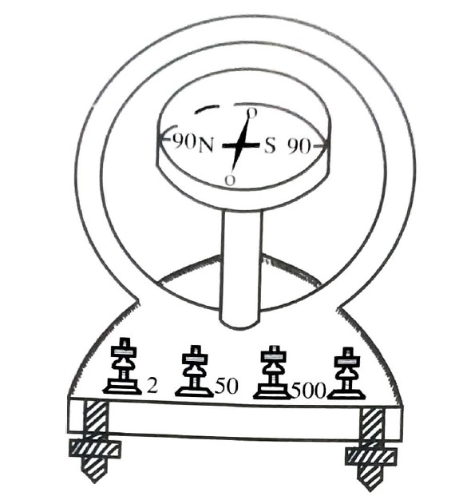

To measure the strength of the current in an electric circuit.
Tangent galvanometer, commutator, rheostat, battery eliminator, Ammeter of rang 0-1A, plug key, sprit level and connecting wires.
Magnetic field 'B' is produced at the center of a coil carrying
current. This is measured by the deflection '\(\theta \)' observed by
the pivoted magnetic needle as in the case of deflection magnetometer.
\(B=B_{H}tan\theta \)
Magnetic field produced at the centre due to a coil carriying current
i.
\(B=\frac{\mu _{0ni}}{2r}\)
n=number of turns in the coil.
r=average radius of the coil.
\(i=\frac{2rB_{H}}{\mu _{0}n}.tan\theta \)
\(K=\frac{2rB_{H}}{\mu _{0}n}\) is called the reduction factor and has
the unit of Ampere
The tangent galvanometer consists of a vertical circular coil of certain number of turns of insulated copper wire wound on a non magnetic frame. This is mounted vertical on a horizontal base provided width leveling screws. The coil can be rotated about a vertical axis passing through its centre of the circular coil. It has a magnetic compass arranged such that its pivot coincides with the center of the circular coil. The compass has magnetic needle pivoted at its center. A long aluminium pointer is fixed perpendicular to the magnetic needle at its mid point. The combination can rotate in a horizontal plane about the pivot. The aluminium pointer moves over a circular scale with its centre at the pivot. The scale is divided into four quadants and calibrated in degrees to measure the deflection(0-900-0-900-0). A mirror is provided under the needle to avoid parallax error.The base has terminals attached to the end of the wire of the coil. The number of turns can be changed by selecting proper terminals (say 2,50,500).
The connections are made as shown in the circuit with T1,T2 terminals of the commutator in series with ammeter and rheostat. The tanget gakvanometer is connected to the other two terminals T3 and T4. By connecting T1 and T3 by a plug key current flows through the tangentgalvanometer. If T2 and T4 are connected by a plug key, current flows through tangent galvanometer in opposite direction. Thus the current in the T.G can be reversed. The number of turns(n) is selected so that on adjusting the reeostat, the ammeter gives measurable reading and the corresponding deflection lie between 300 and 600 nearly.
The rheostat is adjusted so that the ammeter reads 0.2Amp The
deflections \(\theta _{1}\, \mathbf{and}\, \theta _{_{2}}\) of the two
ends of the aluminium pointer are noted. Now the current in the TG is
reversed and two more deflection \(\theta _{3}\, \mathbf{and}\, \theta
_{_{4}}\) are noted. The average \(\theta\) the four deflection
\(\theta_{1},\theta_{2},\theta_{3}\mathbf{and}\,\theta_{4}\)
calculated.
The current is calculated using the formula
i=K tan\(\theta\)
\(\mathbf{where}\, K=\frac{2rB_{H}}{\mu _{0}n}\)
The experiment is repeated by increasing the current in steps of 0.2A
and noting the corresponding deflection. The current in the circuit is
calculated in each case. The readings are tabulated.
Radius of the coil is measured from perimeter of coil \(x=2\pi
r\Rightarrow r=x/2\pi y\)